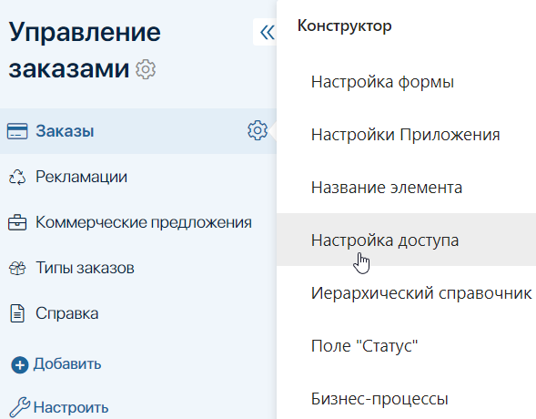
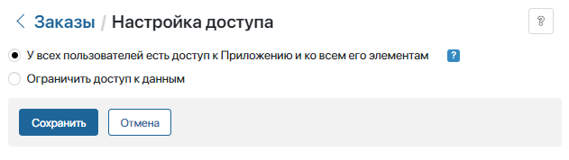
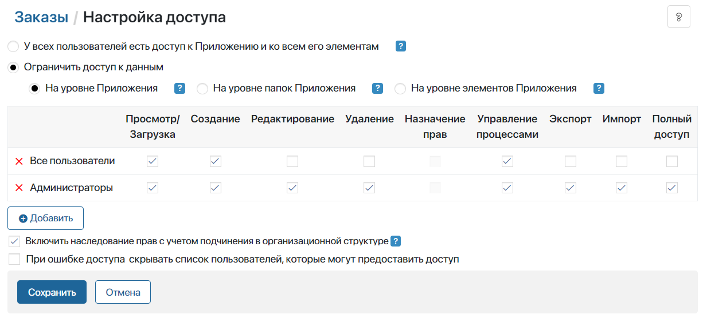

В ELMA365 можно гибко настраивать доступ к данным, хранящимся в приложении.
В зависимости от занимаемой должности или роли у сотрудников могут быть разные типы прав доступа к данным приложения. Например, руководитель отдела продаж может создавать, редактировать и удалять записи в приложении Сделки, а менеджер по продажам — только просматривать.
начало внимание
Выдавать и ограничивать доступ к данным приложения может администратор системы в настройках приложения.
конец внимание
Как настроить доступ
Обратите внимание, для сотрудников, постоянно работающих с приложением, нужно предоставить верхнеуровневый доступ к разделу, в котором оно размещено, и к самому приложению. Тогда к доступным элементам приложения можно перейти через левое меню.
Если отдельные сотрудники работают с данными приложения разово, например, только в рамках задач бизнес-процесса, можно не предоставлять доступы к разделу и приложению. Тогда сотрудник с доступом к данным приложения перейдёт в карточку элемента по прямой ссылке, например, из процессной задачи.
Чтобы ограничить доступ к данным приложения:
- Нажмите на значок шестерёнки справа от его названия и выберите Настройка доступа.

- На открывшейся странице по умолчанию выбрана опция У всех пользователей есть доступ к Приложению и ко всем его элементам. Это значит, что все пользователи могут:
- создавать, просматривать, редактировать и удалять элементы приложения;
- видеть папки настроенного в приложении иерархического справочника и входящие в них элементы;
- экспортировать и импортировать данные приложения.

- Если вы хотите разграничить права доступа, выберите опцию Ограничить доступ к данным.
Ограничение доступа
Опция Ограничить доступ к данным позволяет выбрать сотрудников и определить, какие действия они могут совершать с элементами приложения.

Ограничить доступ к данным приложения можно, выбрав один из вариантов:
- На уровне приложения — самый мягкий вариант. Назначенные пользователям права применяются ко всем элементам приложения.
Используйте этот уровень ограничения, когда все данные приложения могут быть доступны всем сотрудникам, работающим с ним. При этом разграничить права можно в зависимости от должности. Например, просматривать любую вакансию могут все HR-менеджеры, а создавать, редактировать и удалять — только начальник HR-отдела.
- На уровне папок приложения — если в приложении созданы папки, можно назначить разным пользователям разные права для данных каждой папки приложения.
Используйте этот вариант, когда разным сотрудникам доступны данные разных папок. Например, в приложении Вакансии созданы две папки: для вакансий на руководящие должности и для вакансий на должности специалистов. С данными первой папки работает только начальник HR-отдела, а с данными второй папки — HR-менеджеры.
- На уровне элементов приложения — самый строгий вариант разграничения доступа. Можно назначить разные права разным пользователям к отдельным элементам приложения.
Используйте этот уровень, когда нужно разграничить доступ к каждому элементу приложения. Например, в отделе продаж каждый менеджер работает только со своими договорами. Данные договоров являются конфиденциальной информацией для других сотрудников. Тогда право просматривать и редактировать договор можно назначить только его Автору и сотрудникам, указанным в карточке договора Руководителем и Согласующим.
Обратите внимание, на уровне элементов приложения есть возможность временно выдавать дополнительный доступ к конкретным элементам для выполнения разовых задач:
- в карточке элемента приложения;
- в настройках бизнес-процесса.
Для каждого типа ограничения доступны опции:
- Включить наследование прав с учетом подчинения в организационной структуре — включена по умолчанию и позволяет всем вышестоящим руководителям, указанным в иерархии оргструктуры, получать тот же доступ к приложению, его папкам и элементам, который выдан подчинённому.
Если по регламенту вашей компании сотрудники работают с конфиденциальной информацией, к которой должен быть ограничен доступ третьих лиц, отключите эту опцию. После этого руководители не получат тех же прав доступа, которые предоставлены подчинённому.
- При ошибке доступа скрывать список пользователей, которые могут предоставить доступ — по умолчанию сотрудник без прав доступа при попытке открыть карточку элемента приложения увидит список пользователей с привилегией выдачи прав. Чтобы скрыть список, включите опцию.
О других примерах ограничения доступа к данным приложения на разных уровнях читайте в статье «Комбинации настроек доступа».
Типы прав доступа
Вы можете выдать пользователям следующие права:
- Просмотр/Загрузка — разрешено просматривать и загружать элемент приложения;
- Создание — разрешено создавать элементы приложения;
- Редактирование — разрешено вносить изменения в ранее созданные элементы приложения, переименовывать. Для приложений типа Документ пользователи смогут добавлять версии файлов, а также возвращать из архива листы согласования;
- Удаление — разрешено удалять элементы приложения;
- Назначение прав — разрешено выдавать и ограничивать дополнительные права к отдельным элементам приложения, а также предоставлять права на просмотр элемента при упоминании пользователя в ассоциированной ленте. Опция доступна, только если права к данным приложения настроены на уровне его элементов;
- Управление процессами — разрешено прерывать бизнес-процессы, открывать карточки задач и переназначать задачи;
- Экспорт — пользователям разрешено экспортировать элементы приложения, которые они могут просматривать. Опция недоступна на уровне отдельных папок приложения;
- Импорт — разрешено импортировать данные приложения. Опция недоступна на уровне отдельных папок приложения;
- Полный доступ — разрешены все перечисленные выше действия.